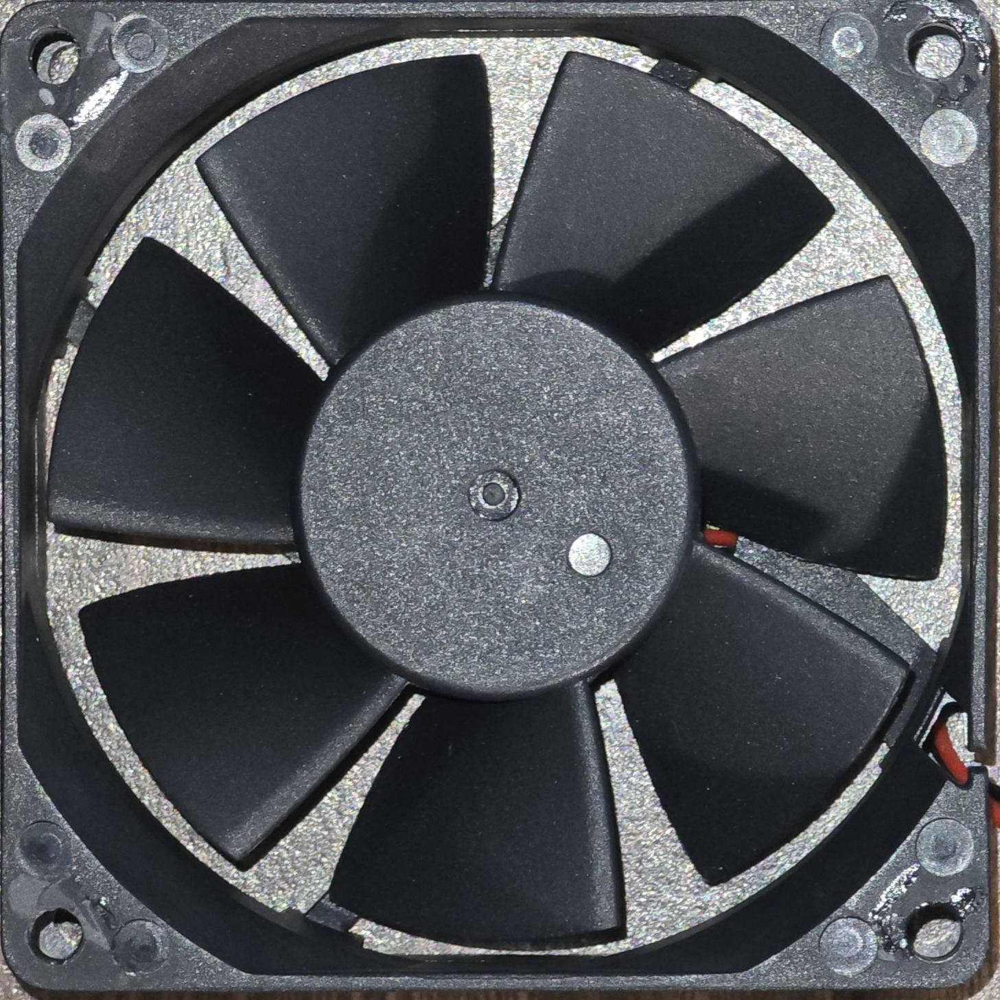

Project One
This is a longer description preview of Project One. It gives a brief overview and cuts off after a few lines if necessary to stay compact.
Aspiring Robotics & Computer Science Developer | Portfolio
I'm Bahand, a passionate developer focused on robotics and computer science. I enjoy creating innovative projects that solve real-world problems and pushing the boundaries of technology.
This is a longer description preview of Project One. It gives a brief overview and cuts off after a few lines if necessary to stay compact.
This is a longer description preview of Project Two. It gives a brief overview and cuts off after a few lines if necessary to stay compact.